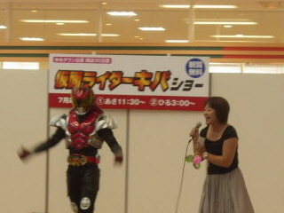

ゆめタウン出雲にまた回転寿司屋さんがオープンするみたい。
2010/03/08
日曜日の求人情報メリットを見ていたら、「ゆめタウン出雲内に3月下旬NEWオープンの回転寿司のお店」ってういのがありました。
以前にもゆめタウンには回転寿司のお店があったんですが、なくなっちゃったんですよね。
確かエレベーターから見下ろせる位置で、食べてるのを見られるような気がするので一度も行かなかったです。
今度のお店はそうならないといいななんて思いました。
㈱エムズコレクションさんの運営です。
拉麺屋神楽、たてまち、旅籠 まつや、もつ鍋
本郷、ごはん屋、Ｈａｎａ４５、レストランタラソとかもしてるとこですね。
ゆめタウン出雲の駐車場は広いですね。
2010/02/14
ゆめタウンに限ったことではないんですが、大型店って駐車場が広いですよね。
駐車場に車を止めて、買い物して帰るのに時間が沢山掛かりますよね。
そんな事をよく思っていたので、ためしに駐車場内を何メートル走っているのか調べてみました。
ゆめタウン出雲の食品売り場がある方（西側）の立体駐車場入り口から距離を測り初めて、3Ｆの駐車場に止めて、買い物後に出口まで車で走った距離です。
日曜日で駐車場は空いていなかったので、場所は外側に止めましたが、ぐるぐるとは回っていません。
で、距離は700メートルでした。想定内の距離でしたか？
これが4ＦやＲＦになると更に長くなりますね～。
ガソリン代はちょびっとですが、その距離をゆっくり走ったら当然時間が掛かりますよね。
出来たら1Ｆに止めたいって思いました。
皆さんも試しに計ってみてはどうでしょう？
ゆめタウン出雲のデジカメプリントは鮮やかでした。
2009/09/22
たまたまかどうか分からないんですが、よそのお店でプリントしてもらった写真と同じものをイズミで焼き増ししたら、イズミの方が色が濃く、とっても鮮やかでした。
よくよく比べてみると、黄色の発色が強くなってました。同じ富士カラー系のお店でも店舗によって色が違うんですね。
機会があったら比べてみると面白いですよ。
今日はデジカメプリント1枚20円でした。
ゆめタウン出雲のエレバーターにはイベント予告があったりします。
2009/06/22
ゆめタウン出雲のエレベータに、イベントのポスターが貼ってありました。
6/27(土)侍戦隊シンケンジャーのショー
6/28(日)芋洗係長のショー
だったと思います。ほかにもイベントの紙が貼ってありました。
週末は賑やかそうですね
ゆめタウン出雲って1周年じゃなかった？
2009/06/21
ゆめタウン出雲ってもう開店してから1周年たったと思うんですけど、1周年記念セールとか誕生祭ってなかったですね。輸入ブランドのお店の1周年記念の広告は見たんですが、他のお店の広告は見なかったです。（私が見落としただけかもしれませんが。）
何故？
でもサントリーさんが、20日はYUTAKA、21日はストロングゼロのチューハイを配ってて、ちょっとお得でした。
デジカメプリントも20円で安かったです。
ファンキーモンキーバイビーズがゆめタウン出雲でプレミアムライブ
2009/03/05
今日の広告にあったんですが、
3/8（日）午後2時から、ニューアルバム「ファンキーモンキーベイビーズ3」発売記念ライブが、観覧無料でゆめタウン出雲であるようです。
CDを購入すると握手会もあるみたいです。
DJケミカルが生でジャンプしているのが見れるかも！って思うと行って見たいですが、沢山の中高生がいる中に大人が入るのははずかしいので、ちょっと敬遠しようかなと思ってます。
FUNKY
MONKEY BABYSっていうと、桜ソング「Lovin' Life
」が流行ってから聞くようになったんですが、軽快なリズムが気持ちいいですね。
シングルのカップリング曲に、季節感のあるものがあって結構好きです。
ゆめタウン出雲でTOSHIトークアンドライブショー
2008/11/16
XJAPANも復活したのに、どうして地味にスーパーに来るんだろう？しかもあんまりゆめタウンは宣伝してないので、力入ったイベントじゃないみたいだし・・・。何故？って不思議に思って行ってみました。
トークによると、歌う事が好きなので、ちょっと時間があると何でも仕事を入れてるそうです。凄いですね。好きで歌ってる人の歌は聞いてて気持ちいいです。
ライブでは「時代」って曲を歌われました。シャープで伸びのある高音が聞いて気持ち良かったです。
個人的には新曲の「EARTH IN THE DARK」が生で聞きたかったんですが、ちょっとスーパーとの雰囲気が合わないので「時代」で良かったかなと思いました。
欲を言うともう1曲何か聞きたかったです。仕方ないので帰って「さよならの季節に」を聞きました。これって1994年の作品なのでもう14年も前なんですね。XJAPANの「Rusty
Nail」も1994年なんですね。なんだか懐かしい気分になりました。
ゆめタウン出雲でカメンライダーキバショー
2008/07/26
イベントがあるので駐車場や店内が混んでいるんじゃないかと心配していたんですが、行って見るとそんなに混んでませんでした。
駐車場もお店もとっても大きいので、人が大勢集まっても混まなくていいですね。
仮面ライダーキバショーも、観客が沢山いたんですが、会場がとっても広いので見てる人たちが全然窮屈そうじゃなかったです。大きなお店はいいですね。

仮面ライダーキバを知らないので、何をやっているのかはわからなかったですが、会場が広いので、とっても臨場感っていうかライブ感みたいな迫力はなかったです。
ちょっと地味でした。
明日7/27は炎神戦隊ゴーオンジャーショーです。時間のある方は気軽にどうぞ。